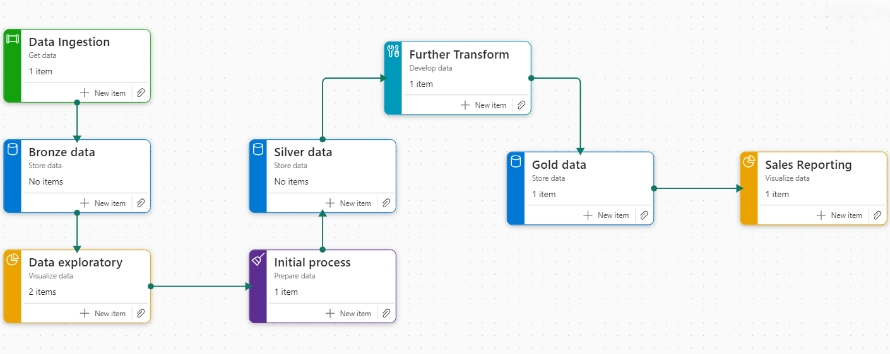
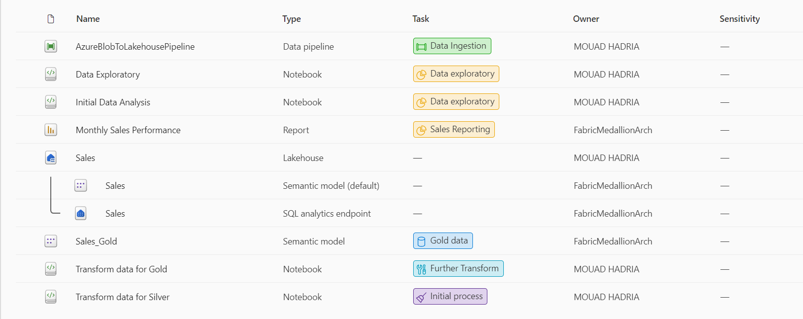
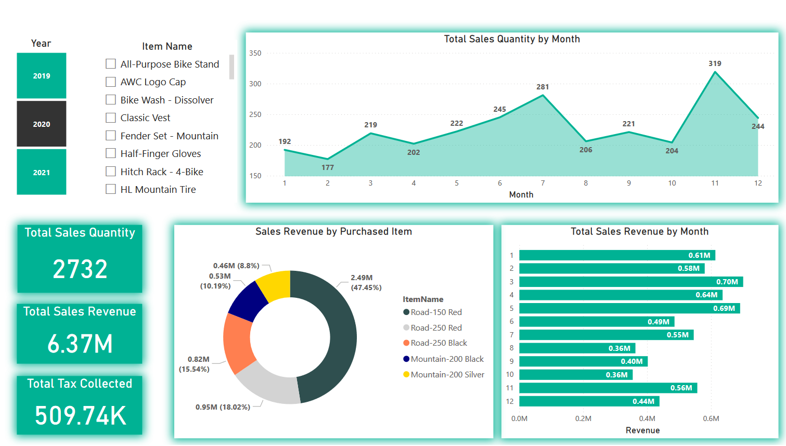

PROJECT OVERVIEW
The project focuses on building an end-to-end (E2E) data analytics solution to track the sales performance of bike retail store. The solution is designed to scale, providing broader business insights and facilitating the integration of artificial intelligence (AI) capabilities to unlock the full potential of business growth. The solution was delivered using Microsoft Fabric to ensure it meets the business needs, including building a semantic model that serves as a data warehouse using the Lakehouse Medallion Architecture.
BUISNIESS ANALYSIS
-
Overview of Business Needs
A bicycle retail store has experienced rapid business growth, leading to increased complexity in traditional data reporting methods. To address this, the store has opted to invest in a smart data analytics solution that is user-friendly, promotes collaboration between technical and non-technical teams, and can seamlessly incorporate AI capabilities.
The store plans a phased transition, initially implementing key tools to monitor sales performance. Once these tools are in place, they will expand the solution to encompass additional business needs, leveraging AI to drive further insights.
-
Approach
After thoroughly assessing the bicycle retail store's business requirements, we decided to develop the project using Microsoft Fabric. This choice is grounded in Fabric's ability to offer a comprehensive and integrated analytics environment that enhances collaboration between data professionals and business users. Fabric seamlessly supports all stages of the data lifecycle, including ingestion, storage, processing, and analysis within a unified platform
Microsoft Fabric provides a strong foundation and scalability for this project. It includes a wide array of essential tools, such as data engineering, data integration, data warehousing, real-time intelligence, data science, and business intelligence. By leveraging Fabric, we simplify our operations by eliminating the need for multiple services from different vendors. The platform's single, user-friendly interface simplifies setup, management, and usage, with optimized experiences and tools designed for various user roles.
Moreover, Microsoft Fabric delivers a unified Software-as-a-Service (SaaS) solution, with all data stored in an open format within OneLake. This central repository is accessible to all analytics engines on the platform, offering scalability, cost-efficiency, and remote accessibility.
-
Key Findings
Business Needs Microsoft Fabric Features Solution Impact Creating an intelligent data analytics solution that is easily accessible to both technical and non-technical users Microsoft Fabric provides multiple approaches to accomplish tasks, supporting both no-code and code-based solutions for collaboration Empowers broader data access and collaboration Starting with essential tools to track sales performance Microsoft Fabric Data Factory, Synpase Data Engineering, Power Bi Services Facilitating the delivery of a comprehensive E2E data analytics solution for tracking sales performance Seeking for AI integration capabilities Microsoft Fabric Data Science Service Enhanced AI integration Expanding the data analytics solution's capacity in the future Microsoft Fabric is SaaS-based data analytics platform Flexibly scale resources up or down to accommodate evolving business requirements
BUSINESS SOLUTION
Solution Architecture
To optimize development time and costs while ensuring reusability and scalability, we carefully studied and selected the Medallion Architecture for our solution. Data lakehouses in Microsoft Fabric are built on the Delta Lake format, which natively supports ACID (Atomicity, Consistency, Isolation, Durability) transactions. Within this framework, the Medallion Architecture is a recommended data design pattern used to logically organize data to enhance quality as it progresses through different stages. The architecture comprises three layers: bronze (raw data), silver (validated data), and gold (enriched data), each representing increasing levels of data quality.
This multi-hop architecture allows data to move between layers as needed, ensuring data reliability and consistency through various validation and transformation processes. By adopting this architecture, we guarantee that data is securely stored, making it easier and faster to analyze. This approach meets the primary needs of reusability and scalability, providing a robust foundation for the intelligent data analytics solution.
Solution tasks flow
- Data Ingestion
- Bronze Data & Data Exploratory
- Initial Process & Silver Data
- Further Transform & Gold Data
- Sales Reporting
The necessary business data is currently stored in Azure Blob Storage. The business owners plan to transition to Microsoft Fabric's OneLake as their primary data store in the future. Therefore, instead of using the OneLake shortcut, we will implement a data pipeline.
Given that the data ingestion methodology will change in the near future, we will access the data using a shared access signature with periodic validity to comply with data security and governance policies. This data pipeline will also be configured to serve as our extract, load, Transform (ELT) data pipeline once other solution components are created and configured.
We load our extracted data into the bronze lakehouse layer with minimal modifications. This approach is advantageous as we move through the Medallion layers, ensuring that both raw and processed data are available to meet the diverse needs of all teams.
Conducting a data exploration task was crucial for understanding the ingested data. Using PySpark notebooks, we generated basic insights and performed data analysis.
Further transformations were carried out using PySpark notebooks, representing a critical midpoint in the data lifecycle. The transformed data was stored as Delta tables to ensure accessibility through both PySpark engines and SQL engines. Additionally, we ensured that the PySpark code was reusable, as it will be orchestrated within our ELT pipeline.
In these tasks, we concentrated on creating a star schema model, ensuring the fact and dimension tables were well-defined to capture sales performance insights while accommodating future data integration scenarios. The resulting data was used to build a robust semantic model with managed relationships, serving as a data warehouse solution and providing the foundation for the reporting tasks.
The business owners have stated they require a dashboard to track the sales revenue and quantity in monthly basis and able to track the sales revenue by the top 5 purchased items all with Year and Items Filters.
Tasks Items
As we can see, both the Bronze Data and Silver Data tasks contain no specific items. This is because they rely on the Lakehouse Files and Tables containers, which cannot be exclusively assigned to any single task.
RESULTS

CONCLUSION
This project successfully achieved its objective of building an E2E data analytics solution to track the sales performance of the bike retail store. The solution was designed with scalability in mind, providing comprehensive business insights and laying the groundwork for future integration of AI.
The key result of the project was the detailed tracking of the store's sales performance, which has already delivered significant value to the business. Overcoming challenges such as creating efficient ELT pipelines, ensuring compatibility among solution components, managing incremental loads and slowly changing dimensions, and maintaining robust data security governance were crucial to the project's success.
Looking ahead, the next steps will focus on leveraging Microsoft Fabric's AI capabilities to deliver deeper business insights and opportunities. Additionally, the project will expand to include the creation of data marts and real-time intelligence analytics, further enhancing the business's data-driven decision-making capabilities.